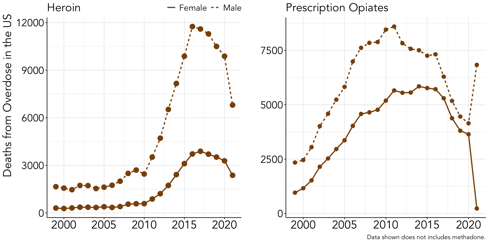
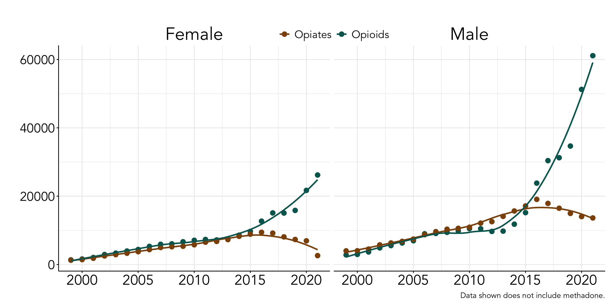
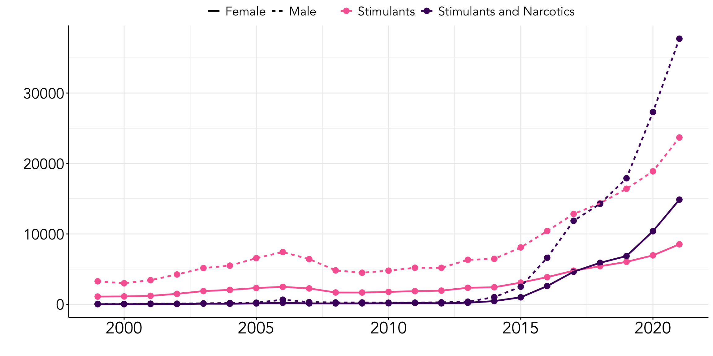

Deaths from Overdose in the United States between 1999 to 2021
news
Introduction
Death from overdose of a substance, or multiple substances, is a sign of a much larger problem than substance abuse or misuse. If you don’t believe in the idea of free will, like myself, then that means that substance abuse occurs because of a persons reinforcement history, current environment, and their biological makeup (i.e., substance use is preventable and is a sign of societal inequities). Substance use when started, is extremely hard to extinguish because it is chemically/behaviorally addictive and relapse/resurgence is very common due to the established history of reinforcement with the substance (e.g., place can be a trigger for relapse, people can be a trigger for relapse, trauma can be a trigger for relapse, etc.,). This makes it especially difficult to treat and establish maintenance behavior for substance use.
I am particularly interested in this data because we know those who have a history of adversity or adverse childhood events have an increased risk for early and life time substance use dependence compared to the general population (Kim et al., 2018; Shin et al., 2018; Strine et al., 2012; Pilowsky et al., 2009; Loudermilk et al., 2018; Dube et al., 2003; Gomez et al., 2018; Stein et al., 2017; Guarino et al., 2021; Sachs-Ericsson et al., 2017; Perez et al., 2016; Dube et al., 2001). That being said, not everyone who overdoses on a substance has a history of adversity, but it is more likely for those with a history of adverse childhood events to engage in substance use.
Data
The data set used in this exploration was from the National Institute on Drug Abuse in the article named “Drug Overdose Death Rates” and can be found here as a downloadable link in the article. The data set includes the number of deaths per year between 1999 through 2021 categorized by the type of substance(s) that caused the death. There were many categories but I ultimately decided to group these categories further by the substance medication class (i.e., opioids, opiates, narcotics, stimulants, etc.,). The exact grouping were as follows,
- Opioids: synthetically derived opiates.
- Prescription opioids (
Prescription Opioids2)
- Prescription opioids other than methadone (
Prescription Opioids WITHOUT Synthetic Opioids other than Methadone)
- Synthetic opioids (
Synthetic Opioids other than Methadone (primarily fentanyl)3)
- Prescription opioids (
- Opiates: compounds that are extracted or refined from natural plant matter (poppy sap and fibers).
- Heroin (
Heroin4)
- Heroin (
- Narcotics: this includes both opiates and opioids.
- Both opiates and opioids (
Any Opioid1)
- Prescription and synthetic opioids other than methadone (
Prescription Opioids AND Synthetic Opioids other than Methadone)
- Heroin and synthetic opioids other than methadone (
Heroin AND Synthetic Opioids other than Methadone)
- Heroin and methadone (
Heroin WITHOUT Synthetic Opioids other than Methadone)
- Both opiates and opioids (
- Stimulants: this includes cocaine, psychostimulants, and psychostimulants with abuse potential.
- Stimulants without any opioids present (
Stimulants WITHOUT Any Opioid)
- Stimulants without any synthetic opioids present (
Stimulants WITHOUT Synthetic Opioids other than Methadone)
- Cocaine without any opioid present (
Cocaine WITHOUT Any Opioid)
- Cocaine without any synthetic opioids present (
Cocaine WITHOUT Synthetic Opioids other than Methadone)
- Psychostimulants with abuse potential (
Psychostimulants With Abuse Potential (primarily methamphetamine)6)
- Psychostimulants with abuse potential without any opioid present (
Psychostimulants With Abuse Potential WITHOUT Any Opioid)
- Psychostimulants with abuse potential without any synthetic opioids present (
Psychostimulants With Abuse Potential WITHOUT Synthetic Opioids other than Methadone)
- Stimulants without any opioids present (
- Benzodiazepine: depressants that produce sedation, relieve anxiety, reduces seizures, and are controlled substances because they are prone to misuse.
- Benzodiazepine without any opioid present (
Benzodiazepines WITHOUT Any Opioid)
- Benzodiazepine without any synthetic opioid present other than methadone (
Benzodiazepines WITHOUT Synthetic Opioids other than Methadone)
- Benzodiazepine without any opioid present (
- Antidepressant: there are many types of antidepressants which include SSRIs, SNRIs, NASSAs, TCAs, SARIs, and MAOIs.
- Antidepressants without any opioid present (
Antidepressants WITHOUT Any Opioid)
- Antidepressants without synthetic opioids present (
Antidepressants WITHOUT Synthetic Opioids other than Methadone)
- Antidepressants without any opioid present (
- Stimulants and Opioids:
- Stimulants and any opioid present (
Stimulants AND Any Opioid)
- Cocaine and any opioid present (
Cocaine AND Any Opioid)
- Psychostimulants with abuse potential and any opioid present (
Psychostimulants With Abuse Potential AND Any Opioid)
- Stimulants and any opioid present (
- Stimulants and Narcotics:
- Stimulants and narcotics (
Stimulants AND Synthetic Opioids other than Methadone)
- Cocaine and narcotics (
Cocaine AND Synthetic Opioids other than Methadone)
- Psychostimulants with abuse potential and narcotics (
Psychostimulants With Abuse Potential AND Synthetic Opioids other than Methadone)
- Stimulants and narcotics (
- Benzodiazepine and Opioids:
- Benzodiazepine and any opioid present (
Benzodiazepines AND Any Opioid)
- Benzodiazepine and any opioid present (
- Benzodiazepine and Narcotics:
- Benzodiazepine and narcotics present (
Benzodiazepines AND Synthetic Opioids other than Methadone)
- Benzodiazepine and narcotics present (
- Antidepressant and Opioids:
- Antidepressant and any opioid present (
Antidepressants AND Any Opioid)
- Antidepressant and any opioid present (
- Antidepressant and Narcotics:
- Antidepressant and narcotics present (
Antidepressants AND Synthetic Opioids other than Methadone)
- Antidepressant and narcotics present (
Reasons for Exploration
If you go to the article where this data came from there is a relatively good write up with both tables, graphs, and interpretations but the way the author categorized the drugs did not, in my opinion, differentiate between opiates and opioids. Both opiates and opioids are highly addictive substances (primary reinforcers), but they neurochemically work differently within our nervous systems which is why it is important to not categorize the substances together as the same because they are indeed not the same. This exploration will dive into understanding if there are different trends over time for opiate vs opioid overdoses in addition to polysubstance use involving opioids and opiates. In addition, there is relatively building evidence of biological sex differences for substance addiction so in order to control for those potential differences we will be differentiating between the number of overdoses by sex for all categorizations.
Death from Overdose in the United States by Year
Opiates
- Viewing at a global perspective, heroin overdoses are second derivative negative starting around 2016 showing both males and females to equally as effected (i.e., mirroring each other). On the other hand, prescription opiates look unstable in terms of the number of overdoses from 2020 to 2021 where males overdoses increased sharply and females overdosed on the substance significantly less. We know that supply and ultimately cost of a substance is going to effect whether a person takes a particular substance. This sudden decrease for overdoses for prescription opiates for females is most likely due to switching to another substance that has similar reinforcing value (i.e., the way it makes the person feel) but is more available/cheaper.
Opioids
- Prescription opioids appear to have been climbing in the number of overdoses since 1999 which is extremely concerning as a society. Fentanyl has become a more popular substance lately especially for overdoses because the concentration of the substance is much higher than any other opioid or opiate. Even though fentanyl has recently been causing the majority of overdoese in the recent years, it is not a new drug and has been around for decades as a pain medication often given as a shot or through IV.
Opiates vs. Opioids

- This graph shows that overdoses from opiates has been decreasing as a rate, second derivative negative, since 2015 for both males and females. On the other hand there appears to be a shift to increased overdoses as a rate over years, second derivative positive, for both males and females which is concerning because the trend only appears to be continuing to increase, and predicatively, will continue to increase.
Polysubstance Use
It is relatively common for multiple substances to be taken together which can be harder for a persons body to process leading to health complications (e.g., heart attack) but also can increase the risk of overdosing because substances can be laced with other substances that might create a biologically problematic interaction or too much of a particular substance. Since opiates and opioids have been lumped together in regards to polysubstance overdoses, I will show the number of overdoses for a substance without the presence of a narcotic and the same substance with the presence of a narcotic.
Stimulants

- Interestingly, stimulants were not previously taken with narcotics between 1999 to 2012, but around 2013 for males and 2015 for females, stimulants and narcotics began to be mixed together causing overdoses. In a similar trend, both males and females in the past 4 years have been overdosing at higher rates when stimulants are mixed with narcotics compared to stimulants being taken alone.
Benzodiazepine
- This graph shows very obviously that those using both narcotics and benzodiazepine often results in some type of overdose death. Benzodiazepine can cause hallucinations which could impair a persons ability to make rational decisions, but also judgement of their perceived “highness” causing them to take too much of a narcotic leading to overdose.
Antidepressants
- From 2006 through 2021, there is a clear trend of females overdosing overall at a much higher rate compared to males generally speaking for both antidepressants alone and when antidepressants and narcotics are present. We can reasonably say those overdosing on antidepressants is a type of suicide, but it is hard to say if the antidepressant found in a toxicology report was their daily medication or if it was at a much higher dose along with either a opiate or opioid which would mean different things.
Discussion
1,004,401 people have died between 1999 through 2021 to substance overdose. Over the past few years, substance overdose has increased exponentially. Outpatient centers are essential to help those with addictions pick up their life, but what is not often acknowledged is that those who have a history of substance addiction are prone to relapse, not because of their lack of self control, but because they have a history of reinforcement with the substance that will never go away. The way to treat substance addiction is to prevent it from occurring all together rather than as a society caring once it is way too late.